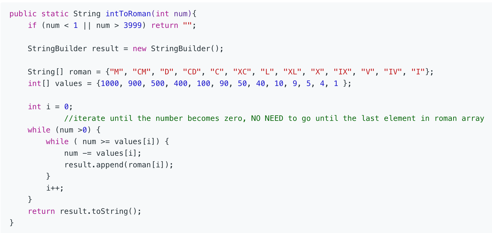

1.Two Sum
官方思路:
- 双重循环，比较简单略过
- 两次循环的hashmap实现，第一次循环把键值对一次放入，第二次循环查找。
- 一次循环的hashmap实现
思路整理：
比较容易想到双循环的思路，但复杂度n方不是最优解。我首先想到的是思路二两次循环hashmap，速度从74ms提升至2ms。这里需要 注意的是判断目标数字下标位置时需要避开当前位置。举个例子【3，6，3】target = 6时不注意的话第一个3会匹配到自己而不是第二个 3。第三个思路巧妙在于不直接一股脑把键值对全塞进去，而是仅在当前元素没查到对应值时才把当前元素和下标存入hashmap。举个例子 官方例子中首先检查2，没查到7于是2，0键值对进入hashmap，接着检查7就直接查到了满足条件的键2于是算法直接返回。此方法阻止了 在构建整个hashmap时无谓的浪费时间，将速度提升至1ms。
2.Add Two Numbers
官方思路:
- 构建新链表，每个listnode的值依次为两个链表值之和。如果有进位则记录在carry中并在下一次循环时算入总和，最后如果两个链表遍历均完成仍有carry，在结果末尾链接新listnode值为carry。
思路整理：
经典链表操作，创建head和curr，curr指向head，通过移动curr构建链表，head用于保存头部位置方便返回结果。难点在于边界条件处理。同时遍历两个链表，只要其中一个没有遍历完就不终止循环，遍历完成的 链表listnode值算为0。这其实是一种化繁为简，避免了考虑长度不相等的边界条件。要注意的是已经遍历完成的链表指针是停止移动的，否则会抛出npe，因为null是没有next属性的。最后不要忽略了长度相等 遍历完成时carry不是0的情况，要在结果末尾额外添加一个值为1的listnode。
3. Longest Substring Without Repeating Characters
官方思路:
- 暴力解法，略过
- 经典滑动窗口遍历法，i，j一头一尾通过在不同情况下更新 i和 j的值至 i+1或 j+1完成对所有符合要求子字符串的遍历。
- 方法三为方法二的优化使用了hashmap存储char和下标键值对，每次跳跃更新 i的值以达到更快速度。
思路整理：
我首先想到并通过的解法，但可以看到速度并不算很快。字符串操作速度肯定不如hashset来的快，所以判断重复肯定用hashset是最快的。除此之外我的方法应该和官方答案方法二是等效的，因为都一定要 完整遍历完整个字符串。至于为什么答案用了双边窗口而这种方法只有单边是因为答案二使用 i和 j配合完成对set的更新，而同样的更新如果用字符串完全可以只用一个标记 i就完成更新。方法三的巧妙之处 在于跳过了一些不需要考虑的情况。就拿最简单的b c a a举例子，方法二遍历到第二个a是发现重复了，但此时集合里有b c a必须依次删除所有元素直到集合里没有a，也就是要删除三次。实际上完全可以把 标记i的下标直接从0也就是b移动到3也就是第二个a的位置，效果是相同的。而要达到这种效果必要的是记录每个char的下标所以很自然想到用hashmap存储char和下标的键值对。另外一点就是我发现答案三 的写法有点迷惑因为hashmap存放的并不是直接的键值对而是char和下标位置+1，这样做应该是为了更新i时不用+1但感觉有点本末倒置。如下写法一样可以通过。

5. Longest Palindromic Substring
官方思路:
- 方法一提到可以找s和s的reverse s‘的最长公共字串，但是这种方法存在一个问题。
- 方法二暴力解法略过，复杂度太高。
- 方法三提到动态规划，暂时不做讨论。
- 重点看下方法四中心扩展方法。
- 方法五一种巧解，不用太过纠结这种解法，没见过的一定做不出来。
思路整理：
我一开始尝试用双指针窗口遍历解决，但很快发现不现实因为没法做到实时更新窗口大小。比如说abcb明显不是回文数但在遍历到最后一个char之前无法判断，因为后面依然可能跟一个a。 至少在遍历完s长度一半之前完全不能判断如何更改窗口。怎么才能实时跟踪一个string是否还是回文数并更新窗口大小呢。很自然想到中心扩展，每次往两边扩展一个字符（前提是不越界） 一旦新加入的字符左右不相等便可以立刻断定不是回文数了，即返回当前长度。另一个巧妙之处在于处理回文数中心在两个字符中间的问题，答案巧妙的利用一轮遍历解决了这两种情况，即i 从0到长度-1，每次依次将窗口两侧指针的初始下标设定为i，i或者i，i+1，这样遍历即可囊括所有可能性。下面贴出我借鉴答案思路后自行完成的版本，引入了一个max变量判读是否为最长 子串。
6. ZigZag Conversion
官方思路:
- 方法一行锁定法
- 方法二官方叫做行访问法，其实我觉得叫行构建法更直观，因为该方法的答案string是顺序构建出来的。
思路整理：
这种找规律为主的题对数学基础好的应该不难。我首先就发现了规律并按照取模运算的规律做出如下写法，但可见速度很慢。问题在于遍历时没有优化，遍历了很多不需要遍历的字符。
参考答案二的思路，我完全可以省略第二个循环里的if判断而直接定位到要append的字符。核心思路还是一样的，找到了原始字符串每n * 2 - 2个字符为一组的规律。方法二主要的优化在于在第二轮循环中j 基于i当前的 位置直接定位到需要append的位置。答案表示把整个string分成三部分即第一行的，最后一行的和其他所有中间的。我感觉这种说法有点迷惑，因为其实所有纵列上的字符被append进入答案时逻辑是相同的而只有处于斜线上的 字符是通过内循环中的if判断进入答案的。所以说分成两大类即纵列上的和斜线上的我认为更合适。 再看答案一，核心思路是先构建出所有的非空行，注意如果string长度比n还要小的情况即可。此时的状态可以看成是构建了刚刚好个数的stringbuilder待写入。剩下需要做的就是遍历完整string并依次判断哪个字符需要append 到哪一行，即填充到哪个待填充的stringbuilder中去。使用两个变量当前行数和当前方向来定位需要填充到哪一行。curow初始值为0，初始方向为向上，每次到达第一行或者最后一行改变方向，每次更新curow需要参考方向的boolean值， 向上即-1，向下即+1，可谓是很自然。两个变量在大循环中互相配合把每个字符append到对应的行中。最后把所有行的stringbuilder串起来就大功告成。个人认为这种想法不是很自然。
7. Reverse Integer
官方思路:
- 官方解法略迷，推荐下链接里的解法。
思路整理：
这位老哥巧妙运用了在不overflow的前提下数学算式算式的恒等变换恒成立这一性质。说白了就是就是对一个数做了什么操作得到了什么结果，对结果你操作就应该得回那个数。如果不是就只能说明发生了overflow。还有一个朴实点的方法 就是用long来存储答案，当答案越过int的存储界限时返回0。最后强制转型成int返回，不然会因为损失精度报错（其实没有损失，只是java不支持不安全的转型）。如下：
8. String to Integer (atoi)
官方思路:
- 官方没有解法。
思路整理：
非常无聊的一个ifelse练习，只有几个地方要注意。第一去掉空格可以用trim方法，这样可以不用单独去判断空格。第二正负号的判断，正号判断意义不明但是依然要做判断，注意只需要在去掉空格后判断一次即可，后面出现再多正负号也和字母一样当作杂音处理 立刻返回结果即可。第三是整数overflow判断，预先把结果保存在long变量中，在返回前判断是否overflow即可。

9. Palindrome Number
官方思路:
- while循环中每次取mod10，乘上10，x/10，循环后如果结果和初始的x相等则为回文数，比较简单就是利用回文数的性质。
思路整理：
我首先想到的是转换成字符串再比较的方法，速度并不快。猜测原因为java中字符串操作比arithmetic慢，因为int，double等均为原始数据类型，jvm初始化时直接为该类型分配内存地址。而string则是对象。感觉能用primitive data type解决就不要用 object类型。

11. Container With Most Water
官方思路:
- 暴力解法
- 双指针一次循环遍历
思路整理：
很容易想到的双指针循环遍历法，初始指针设置在两侧，每次判断两侧夹板的长短，奖短的一侧往相反方向移动（移动长的一侧并不能改变当前最大容积），实时更新max即可。官方答案有一段清晰的解释：Initially we consider the area constituting the exterior most lines. Now, to maximize the area, we need to consider the area between the lines of larger lengths. If we try to move the pointer at the longer line inwards, we won't gain any increase in area, since it is limited by the shorter line. But moving the shorter line's pointer could turn out to be beneficial, as per the same argument, despite the reduction in the width. This is done since a relatively longer line obtained by moving the shorter line's pointer might overcome the reduction in area caused by the width reduction.

12. Integer to Roman
官方思路:
- 贪婪算法
- hardcode
思路整理：
贪婪算法本质是每一步取当前的局部最优解从而去近似全局最优解。在这里贪婪算法是准确的，即最终结果就是全局最优解。在题目给定范围内罗马字母和他们对应的数字一共只有十三种情况。每次减掉当前所能减掉的 最大的数字直到减为0。实现如下。（评论区看到的比较自然的一种写法，官方答案里第一个for循环就很迷） hardcode法干脆连循环都省了，利用了可以取到每一位上的数字这个特性为个十百千位分别hardcode了一个数组，接下来依次计算各个数位上的具体数字再根据数字append对应数组上对应位置的罗马数字即可。 个人很不喜欢这种思想，从软件设计角度来看这种做法是不利于维护的。比如像哪一天罗马数字的规则改变了那么所有数组可能都要大改，相对的第一种解法只需维护一个数组即可。官方答案也提到了这一点。
13. Roman to Integer
官方思路:
- 从左至右循环，hashmap，每次检查下一个字符和当前字符比较，顺序则加上当前值，发现逆序则改为加上下一个字符的值与当前字符值之差。
- 从左至右循环改良版。将两个字符组成的罗马符号和对应数字键值对也加入hashmap，循环时检查是否出现两个字符组成的罗马符号，出现则加上其值，未出现则是普通情况，同样加上其值。
- 从右至左循环，每次只需要当前字符的值而无需考虑两个字符的情况。利用了两个字符一组时右侧的单个字符的值永远为正这一性质，避免了每次判断下一个字符是否越界的计算量。即省去了这一判断：if (i < s.length() - 1)。从右向左正常情况 current应该大与last，如出现current小于last则说明出现了逆序情况，此时应该改为减去current的值而不是加上。
思路整理：
当看到这种有序键值对的时候hashmap是一种自然的想法。个人感觉方法一和三没有本质的区别。二稍显的有点不自然。每次通过观察当前字符的值和后一个或前一个字符对应的值的大小关系来处理逆序的情况是 很自然一种想法，至少我第一下想到的是这种思路。剩下的要点就是要马上想到用hashmap，不然要判断逆序情况会比较麻烦。
14. Longest Common Prefix
官方思路:
- 水平扫描,初始prefix设置为第一个元素，运用indexof检测prefix在其余元素中出现的位置均为0，一旦不满足条件就将prefix尾部字符cut掉，逐步缩小prefix直到满足要求的prefix出现。
- 纵向扫描，水平的优化。扫描第一个元素的每个字符，一旦发现当前prefix长度超过后续元素长度或者当前扫描的字符和后续元素对应位置上的字符不一致，则更新prefix为substring（0，i）。
- 分治
- 二分查找
思路整理：
重点看下前两种方法。纵向扫描的优势在于如果数组末尾存在一个很短的string，横向扫描的效率就会变的很低。普通情况下横纵向扫描复杂度是一样的，只是纵向提高了下限而已。后两种想法可行但是感觉放在这里实在不太自然。

15. 3Sum
官方思路:
- 双指针，把问题拆解成一个单循环和一个twosum问题。不是很喜欢答案的写法。推荐下面的写法。 双指针
- hashset，不喜欢答案的思路相当晦涩难懂，推荐下面的写法。 hashset
思路整理：
一开始尝试用二分查找，后来发现忽略了不能有重复的问题而二分查找无法很好地处理去重的问题。因此就必须锁定需要查找的区间，于是自然联想到双指针的思路。 另外想到提前对数组排序很重要可以让问题瞬间简化不少。此题有两种去重思路，一种是利用hashset自带的性质去重（集合不允许重复元素），代价是慢需要500ms左右。官方第二种解法优化后仍需要235ms。另一种是正常arraylist在循环时就跳过重复的元素，速度快只需20ms左右。
16. 3Sum Closest
官方思路:
- 双指针，把问题拆解成一个单循环和一个twosum问题。写法如下。
- 二分查找，每次固定两个数，在剩下（右侧）的数组里寻找complement（target减去前两个数）。
思路整理：
第一种双指针法和上一道3sum很像，但是有两个地方需要注意一下。第一点，当sum就等于target时可以直接返回，因为此时已经不可能存在一个比0绝对值更小的数，即已经找到了答案。 第二点，当nums【i】的值大于target时可以直接返回当前答案，因为数组是排好序的，继续向后寻找也不可能找到一个比当前更接近target的答案。这两个地方及时返回答案可以节省不少时间， 而提前排序可以试此类问题简化不少。这道题的解法显然是双指针更自然。二分查找利用了查找结束时如果没有sum==target的情况，lo和hi正好分别对应两个使sum最接近target的位置，之后只需要判断哪一个更接近然后更新答案即可。二分查找在复杂度上要比双指针慢一个logn。
17. Letter Combinations of a Phone Number
官方思路:
- backtracking 回溯，推荐评论区看到的如下写法。
思路整理：
因为需要把数字映射到一组字符上，很自然想到建立hashmap。假设输入数字为23，2对应abc，3对应def，我们首先要把a对应到def，然后是b对应到def，最后是c。当输入数字很长时就需要一层层地按深度优先顺序找出所有组合。 backtracking正是解决这种有层次调用的有力工具。与recursion相同需要先想好一个退出条件，此题中当字符长度等于数字长度时即退出（找到了一个符合条件的组合）。用stringbuilder可以提高速度，因为不用创建多个string对象，而是对同一个sb对象反复修改， 但同时要注意在循环结束之前去掉当前sb对象的最后一个char，否则之后的sb对象会一直带着这个字符。下面以23为例将回溯过程过一遍，首先index初始值为0，初始sb为空，当前数字为2，对当前数字对应的所有字符（abc）做循环，sb添加当前字符后进入递归。首先添加a，index+1，对应数字3， 3对应字符为def，a添加d，达到退出条件，答案添加ad，删除d，a添加e，ae达到条件退出，删除e添加f，退出删除f，此时最大的循环即abc循环结束，删除a，添加b进入下一个小循环，同理添加bd，bd，bf，删除b添加c，进入最后一个大循环添加cd，ce，cf，整个循环结束返回结果。

18. 4Sum
官方思路:
- 没有官方标答
思路整理：
借鉴了15题的思路，拆分成两个循环和一个双指针循环，去重选择了hashset虽然速度较慢但无需考虑诸多边界情况（比如何时跳过当前元素），只要遇到和为target的数组就放进hashset，hashset会自动帮你去重。 如果追求速度用arraylist就要注意当当前元素和上一个元素相同时跳过当前元素来去重。
19. Remove Nth Node From End of List
官方思路:
- 两遍循环
- 一遍循环
思路整理：
两边循环还是比较好想到的。第一遍循环找到总长度，第二遍循环找到需要删除的节点前一个节点的位置，将下一个节点连接到下下个节点即可，此时中间的节点相当于被删除了（没有指向它的引用，被当作垃圾回收）。 第二种思路一遍循环相对比较巧妙，用两个指针来遍历链表，初始距离一个指针设置在最开头（一般为dummy，指向head），第二个设置为距离第一个指针n个节点的位置。然后遍历链表直到第二个指针的下一个节点为空， 此时第一个节点的位置正是我们要找的位置，其他操作同方法一。


20. Valid Parentheses
官方思路:
- stack + hashmap
思路整理：
stack的思路不难想到，个人感觉用string还是hashmap无所谓。唯一难点在于提前考虑到种种边界情况，一开始漏掉了stack为空的情况，即只有右括号没有做括号，简单debug后给出了如下答案。 需要保证的是每当遇到一个右括号且stack非空是弹出的stack顶元素是对应的左括号（是空说明没有左括号直接返回false），stack先进先出的数据结构正适合这一思路。